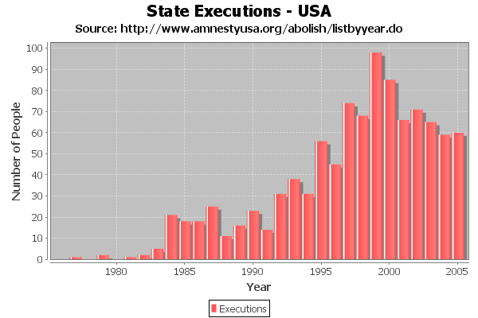

Package org.jfree.chart.renderer.xy
Class XYBarRenderer
- java.lang.Object
-
- org.jfree.chart.renderer.AbstractRenderer
-
- org.jfree.chart.renderer.xy.AbstractXYItemRenderer
-
- org.jfree.chart.renderer.xy.XYBarRenderer
-
- All Implemented Interfaces:
java.io.Serializable,java.lang.Cloneable,java.util.EventListener,AnnotationChangeListener,LegendItemSource,XYItemRenderer,org.jfree.util.PublicCloneable
- Direct Known Subclasses:
ClusteredXYBarRenderer,StackedXYBarRenderer
public class XYBarRenderer extends AbstractXYItemRenderer implements XYItemRenderer, java.lang.Cloneable, org.jfree.util.PublicCloneable, java.io.Serializable
A renderer that draws bars on anXYPlot(requires anIntervalXYDataset). The example shown here is generated by theXYBarChartDemo1.javaprogram included in the JFreeChart demo collection:
- See Also:
- Serialized Form
-
-
Nested Class Summary
Nested Classes Modifier and Type Class Description protected classXYBarRenderer.XYBarRendererStateThe state class used by this renderer.
-
Field Summary
-
Fields inherited from class org.jfree.chart.renderer.AbstractRenderer
DEFAULT_OUTLINE_PAINT, DEFAULT_OUTLINE_STROKE, DEFAULT_PAINT, DEFAULT_SHAPE, DEFAULT_STROKE, DEFAULT_VALUE_LABEL_FONT, DEFAULT_VALUE_LABEL_PAINT, ZERO
-
-
Constructor Summary
Constructors Constructor Description XYBarRenderer()The default constructor.XYBarRenderer(double margin)Constructs a new renderer.
-
Method Summary
All Methods Static Methods Instance Methods Concrete Methods Modifier and Type Method Description java.lang.Objectclone()Returns a clone of the renderer.voiddrawItem(java.awt.Graphics2D g2, XYItemRendererState state, java.awt.geom.Rectangle2D dataArea, PlotRenderingInfo info, XYPlot plot, ValueAxis domainAxis, ValueAxis rangeAxis, XYDataset dataset, int series, int item, CrosshairState crosshairState, int pass)Draws the visual representation of a single data item.protected voiddrawItemLabel(java.awt.Graphics2D g2, XYDataset dataset, int series, int item, XYPlot plot, XYItemLabelGenerator generator, java.awt.geom.Rectangle2D bar, boolean negative)Draws an item label.booleanequals(java.lang.Object obj)Tests this renderer for equality with an arbitrary object.RangefindDomainBounds(XYDataset dataset)Returns the lower and upper bounds (range) of the x-values in the specified dataset.RangefindRangeBounds(XYDataset dataset)Returns the lower and upper bounds (range) of the y-values in the specified dataset.doublegetBarAlignmentFactor()Returns the bar alignment factor.XYBarPaintergetBarPainter()Returns the bar painter.doublegetBase()Returns the base value for the bars.static XYBarPaintergetDefaultBarPainter()Returns the default bar painter.static booleangetDefaultShadowsVisible()Returns the default value for theshadowsVisibleflag.org.jfree.ui.GradientPaintTransformergetGradientPaintTransformer()Returns the gradient paint transformer (an object used to transform gradient paint objects to fit each bar).java.awt.ShapegetLegendBar()Returns the shape used to represent bars in each legend item.LegendItemgetLegendItem(int datasetIndex, int series)Returns a default legend item for the specified series.doublegetMargin()Returns the margin which is a percentage amount by which the bars are trimmed.ItemLabelPositiongetNegativeItemLabelPositionFallback()Returns the fallback position for negative item labels that don't fit within a bar.ItemLabelPositiongetPositiveItemLabelPositionFallback()Returns the fallback position for positive item labels that don't fit within a bar.booleangetShadowsVisible()Returns the flag that controls whether or not shadows are drawn for the bars.doublegetShadowXOffset()Returns the shadow x-offset.doublegetShadowYOffset()Returns the shadow y-offset.booleangetUseYInterval()Returns a flag that determines whether the y-interval from the dataset is used to calculate the length of each bar.XYItemRendererStateinitialise(java.awt.Graphics2D g2, java.awt.geom.Rectangle2D dataArea, XYPlot plot, XYDataset dataset, PlotRenderingInfo info)Initialises the renderer and returns a state object that should be passed to all subsequent calls to the drawItem() method.booleanisDrawBarOutline()Returns a flag that controls whether or not bar outlines are drawn.voidsetBarAlignmentFactor(double factor)Sets the bar alignment factor and sends aRendererChangeEventto all registered listeners.voidsetBarPainter(XYBarPainter painter)Sets the bar painter and sends aRendererChangeEventto all registered listeners.voidsetBase(double base)Sets the base value for the bars and sends aRendererChangeEventto all registered listeners.static voidsetDefaultBarPainter(XYBarPainter painter)Sets the default bar painter.static voidsetDefaultShadowsVisible(boolean visible)Sets the default value for the shadows visible flag.voidsetDrawBarOutline(boolean draw)Sets the flag that controls whether or not bar outlines are drawn and sends aRendererChangeEventto all registered listeners.voidsetGradientPaintTransformer(org.jfree.ui.GradientPaintTransformer transformer)Sets the gradient paint transformer and sends aRendererChangeEventto all registered listeners.voidsetLegendBar(java.awt.Shape bar)Sets the shape used to represent bars in each legend item and sends aRendererChangeEventto all registered listeners.voidsetMargin(double margin)Sets the percentage amount by which the bars are trimmed and sends aRendererChangeEventto all registered listeners.voidsetNegativeItemLabelPositionFallback(ItemLabelPosition position)Sets the fallback position for negative item labels that don't fit within a bar, and sends aRendererChangeEventto all registered listeners.voidsetPositiveItemLabelPositionFallback(ItemLabelPosition position)Sets the fallback position for positive item labels that don't fit within a bar, and sends aRendererChangeEventto all registered listeners.voidsetShadowVisible(boolean visible)Sets the flag that controls whether or not the renderer draws shadows for the bars, and sends aRendererChangeEventto all registered listeners.voidsetShadowXOffset(double offset)Sets the x-offset for the bar shadow and sends aRendererChangeEventto all registered listeners.voidsetShadowYOffset(double offset)Sets the y-offset for the bar shadow and sends aRendererChangeEventto all registered listeners.voidsetUseYInterval(boolean use)Sets the flag that determines whether the y-interval from the dataset is used to calculate the length of each bar, and sends aRendererChangeEventto all registered listeners.-
Methods inherited from class org.jfree.chart.renderer.xy.AbstractXYItemRenderer
addAnnotation, addAnnotation, addEntity, annotationChanged, calculateDomainMarkerTextAnchorPoint, drawAnnotations, drawDomainGridLine, drawDomainLine, drawDomainMarker, drawItemLabel, drawRangeLine, drawRangeMarker, fillDomainGridBand, fillRangeGridBand, findDomainBounds, findRangeBounds, getAnnotations, getBaseItemLabelGenerator, getBaseToolTipGenerator, getDrawingSupplier, getItemLabelGenerator, getItemLabelGenerator, getLegendItemLabelGenerator, getLegendItems, getLegendItemToolTipGenerator, getLegendItemURLGenerator, getPassCount, getPlot, getSeriesItemLabelGenerator, getSeriesToolTipGenerator, getToolTipGenerator, getToolTipGenerator, getURLGenerator, isPointInRect, lineTo, moveTo, removeAnnotation, removeAnnotations, setBaseItemLabelGenerator, setBaseToolTipGenerator, setItemLabelGenerator, setLegendItemLabelGenerator, setLegendItemToolTipGenerator, setLegendItemURLGenerator, setPlot, setSeriesItemLabelGenerator, setSeriesToolTipGenerator, setToolTipGenerator, setURLGenerator, updateCrosshairValues, updateCrosshairValues
-
Methods inherited from class org.jfree.chart.renderer.AbstractRenderer
addChangeListener, calculateLabelAnchorPoint, clearSeriesPaints, clearSeriesStrokes, fireChangeEvent, getAutoPopulateSeriesFillPaint, getAutoPopulateSeriesOutlinePaint, getAutoPopulateSeriesOutlineStroke, getAutoPopulateSeriesPaint, getAutoPopulateSeriesShape, getAutoPopulateSeriesStroke, getBaseCreateEntities, getBaseFillPaint, getBaseItemLabelFont, getBaseItemLabelPaint, getBaseItemLabelsVisible, getBaseLegendShape, getBaseLegendTextFont, getBaseLegendTextPaint, getBaseNegativeItemLabelPosition, getBaseOutlinePaint, getBaseOutlineStroke, getBasePaint, getBasePositiveItemLabelPosition, getBaseSeriesVisible, getBaseSeriesVisibleInLegend, getBaseShape, getBaseStroke, getCreateEntities, getDataBoundsIncludesVisibleSeriesOnly, getDefaultEntityRadius, getItemCreateEntity, getItemFillPaint, getItemLabelAnchorOffset, getItemLabelFont, getItemLabelFont, getItemLabelPaint, getItemLabelPaint, getItemOutlinePaint, getItemOutlineStroke, getItemPaint, getItemShape, getItemStroke, getItemVisible, getLegendShape, getLegendTextFont, getLegendTextPaint, getNegativeItemLabelPosition, getNegativeItemLabelPosition, getPositiveItemLabelPosition, getPositiveItemLabelPosition, getSeriesCreateEntities, getSeriesFillPaint, getSeriesItemLabelFont, getSeriesItemLabelPaint, getSeriesNegativeItemLabelPosition, getSeriesOutlinePaint, getSeriesOutlineStroke, getSeriesPaint, getSeriesPositiveItemLabelPosition, getSeriesShape, getSeriesStroke, getSeriesVisible, getSeriesVisible, getSeriesVisibleInLegend, getSeriesVisibleInLegend, getTreatLegendShapeAsLine, hashCode, hasListener, isItemLabelVisible, isSeriesItemLabelsVisible, isSeriesVisible, isSeriesVisibleInLegend, lookupLegendShape, lookupLegendTextFont, lookupLegendTextPaint, lookupSeriesFillPaint, lookupSeriesOutlinePaint, lookupSeriesOutlineStroke, lookupSeriesPaint, lookupSeriesShape, lookupSeriesStroke, notifyListeners, removeChangeListener, setAutoPopulateSeriesFillPaint, setAutoPopulateSeriesOutlinePaint, setAutoPopulateSeriesOutlineStroke, setAutoPopulateSeriesPaint, setAutoPopulateSeriesShape, setAutoPopulateSeriesStroke, setBaseCreateEntities, setBaseCreateEntities, setBaseFillPaint, setBaseFillPaint, setBaseItemLabelFont, setBaseItemLabelFont, setBaseItemLabelPaint, setBaseItemLabelPaint, setBaseItemLabelsVisible, setBaseItemLabelsVisible, setBaseItemLabelsVisible, setBaseLegendShape, setBaseLegendTextFont, setBaseLegendTextPaint, setBaseNegativeItemLabelPosition, setBaseNegativeItemLabelPosition, setBaseOutlinePaint, setBaseOutlinePaint, setBaseOutlineStroke, setBaseOutlineStroke, setBasePaint, setBasePaint, setBasePositiveItemLabelPosition, setBasePositiveItemLabelPosition, setBaseSeriesVisible, setBaseSeriesVisible, setBaseSeriesVisibleInLegend, setBaseSeriesVisibleInLegend, setBaseShape, setBaseShape, setBaseStroke, setBaseStroke, setCreateEntities, setCreateEntities, setDataBoundsIncludesVisibleSeriesOnly, setDefaultEntityRadius, setFillPaint, setFillPaint, setItemLabelAnchorOffset, setItemLabelFont, setItemLabelFont, setItemLabelPaint, setItemLabelPaint, setItemLabelsVisible, setItemLabelsVisible, setItemLabelsVisible, setLegendShape, setLegendTextFont, setLegendTextPaint, setNegativeItemLabelPosition, setNegativeItemLabelPosition, setOutlinePaint, setOutlinePaint, setOutlineStroke, setOutlineStroke, setPaint, setPaint, setPositiveItemLabelPosition, setPositiveItemLabelPosition, setSeriesCreateEntities, setSeriesCreateEntities, setSeriesFillPaint, setSeriesFillPaint, setSeriesItemLabelFont, setSeriesItemLabelFont, setSeriesItemLabelPaint, setSeriesItemLabelPaint, setSeriesItemLabelsVisible, setSeriesItemLabelsVisible, setSeriesItemLabelsVisible, setSeriesNegativeItemLabelPosition, setSeriesNegativeItemLabelPosition, setSeriesOutlinePaint, setSeriesOutlinePaint, setSeriesOutlineStroke, setSeriesOutlineStroke, setSeriesPaint, setSeriesPaint, setSeriesPositiveItemLabelPosition, setSeriesPositiveItemLabelPosition, setSeriesShape, setSeriesShape, setSeriesStroke, setSeriesStroke, setSeriesVisible, setSeriesVisible, setSeriesVisible, setSeriesVisible, setSeriesVisibleInLegend, setSeriesVisibleInLegend, setSeriesVisibleInLegend, setSeriesVisibleInLegend, setShape, setShape, setStroke, setStroke, setTreatLegendShapeAsLine
-
Methods inherited from class java.lang.Object
finalize, getClass, notify, notifyAll, toString, wait, wait, wait
-
Methods inherited from interface org.jfree.chart.LegendItemSource
getLegendItems
-
Methods inherited from interface org.jfree.chart.renderer.xy.XYItemRenderer
addAnnotation, addAnnotation, addChangeListener, drawAnnotations, drawDomainGridLine, drawDomainMarker, drawRangeLine, drawRangeMarker, fillDomainGridBand, fillRangeGridBand, getBaseItemLabelFont, getBaseItemLabelGenerator, getBaseItemLabelPaint, getBaseItemLabelsVisible, getBaseNegativeItemLabelPosition, getBaseOutlinePaint, getBaseOutlineStroke, getBasePaint, getBasePositiveItemLabelPosition, getBaseSeriesVisible, getBaseSeriesVisibleInLegend, getBaseShape, getBaseStroke, getBaseToolTipGenerator, getItemLabelFont, getItemLabelFont, getItemLabelGenerator, getItemLabelPaint, getItemLabelPaint, getItemOutlinePaint, getItemOutlineStroke, getItemPaint, getItemShape, getItemStroke, getItemVisible, getLegendItemLabelGenerator, getNegativeItemLabelPosition, getNegativeItemLabelPosition, getPassCount, getPlot, getPositiveItemLabelPosition, getPositiveItemLabelPosition, getSeriesItemLabelFont, getSeriesItemLabelGenerator, getSeriesItemLabelPaint, getSeriesNegativeItemLabelPosition, getSeriesOutlinePaint, getSeriesOutlineStroke, getSeriesPaint, getSeriesPositiveItemLabelPosition, getSeriesShape, getSeriesStroke, getSeriesToolTipGenerator, getSeriesVisible, getSeriesVisible, getSeriesVisibleInLegend, getSeriesVisibleInLegend, getToolTipGenerator, getURLGenerator, isItemLabelVisible, isSeriesItemLabelsVisible, isSeriesVisible, isSeriesVisibleInLegend, removeAnnotation, removeAnnotations, removeChangeListener, setBaseItemLabelFont, setBaseItemLabelGenerator, setBaseItemLabelPaint, setBaseItemLabelsVisible, setBaseItemLabelsVisible, setBaseItemLabelsVisible, setBaseNegativeItemLabelPosition, setBaseNegativeItemLabelPosition, setBaseOutlinePaint, setBaseOutlineStroke, setBasePaint, setBasePositiveItemLabelPosition, setBasePositiveItemLabelPosition, setBaseSeriesVisible, setBaseSeriesVisible, setBaseSeriesVisibleInLegend, setBaseSeriesVisibleInLegend, setBaseShape, setBaseStroke, setBaseToolTipGenerator, setItemLabelFont, setItemLabelGenerator, setItemLabelPaint, setItemLabelsVisible, setItemLabelsVisible, setItemLabelsVisible, setLegendItemLabelGenerator, setNegativeItemLabelPosition, setNegativeItemLabelPosition, setOutlinePaint, setOutlineStroke, setPaint, setPlot, setPositiveItemLabelPosition, setPositiveItemLabelPosition, setSeriesItemLabelFont, setSeriesItemLabelGenerator, setSeriesItemLabelPaint, setSeriesItemLabelsVisible, setSeriesItemLabelsVisible, setSeriesItemLabelsVisible, setSeriesNegativeItemLabelPosition, setSeriesNegativeItemLabelPosition, setSeriesOutlinePaint, setSeriesOutlineStroke, setSeriesPaint, setSeriesPositiveItemLabelPosition, setSeriesPositiveItemLabelPosition, setSeriesShape, setSeriesStroke, setSeriesToolTipGenerator, setSeriesVisible, setSeriesVisible, setSeriesVisible, setSeriesVisible, setSeriesVisibleInLegend, setSeriesVisibleInLegend, setSeriesVisibleInLegend, setSeriesVisibleInLegend, setShape, setStroke, setToolTipGenerator, setURLGenerator
-
-
-
-
Constructor Detail
-
XYBarRenderer
public XYBarRenderer()
The default constructor.
-
XYBarRenderer
public XYBarRenderer(double margin)
Constructs a new renderer.- Parameters:
margin- the percentage amount to trim from the width of each bar.
-
-
Method Detail
-
getDefaultBarPainter
public static XYBarPainter getDefaultBarPainter()
Returns the default bar painter.- Returns:
- The default bar painter.
- Since:
- 1.0.11
-
setDefaultBarPainter
public static void setDefaultBarPainter(XYBarPainter painter)
Sets the default bar painter.- Parameters:
painter- the painter (nullnot permitted).- Since:
- 1.0.11
-
getDefaultShadowsVisible
public static boolean getDefaultShadowsVisible()
Returns the default value for theshadowsVisibleflag.- Returns:
- A boolean.
- Since:
- 1.0.13
- See Also:
setDefaultShadowsVisible(boolean)
-
setDefaultShadowsVisible
public static void setDefaultShadowsVisible(boolean visible)
Sets the default value for the shadows visible flag.- Parameters:
visible- the new value for the default.- Since:
- 1.0.13
- See Also:
getDefaultShadowsVisible()
-
getBase
public double getBase()
Returns the base value for the bars.- Returns:
- The base value for the bars.
- See Also:
setBase(double)
-
setBase
public void setBase(double base)
Sets the base value for the bars and sends aRendererChangeEventto all registered listeners. The base value is not used if the dataset's y-interval is being used to determine the bar length.- Parameters:
base- the new base value.- See Also:
getBase(),getUseYInterval()
-
getUseYInterval
public boolean getUseYInterval()
Returns a flag that determines whether the y-interval from the dataset is used to calculate the length of each bar.- Returns:
- A boolean.
- See Also:
setUseYInterval(boolean)
-
setUseYInterval
public void setUseYInterval(boolean use)
Sets the flag that determines whether the y-interval from the dataset is used to calculate the length of each bar, and sends aRendererChangeEventto all registered listeners.- Parameters:
use- the flag.- See Also:
getUseYInterval()
-
getMargin
public double getMargin()
Returns the margin which is a percentage amount by which the bars are trimmed.- Returns:
- The margin.
- See Also:
setMargin(double)
-
setMargin
public void setMargin(double margin)
Sets the percentage amount by which the bars are trimmed and sends aRendererChangeEventto all registered listeners.- Parameters:
margin- the new margin.- See Also:
getMargin()
-
isDrawBarOutline
public boolean isDrawBarOutline()
Returns a flag that controls whether or not bar outlines are drawn.- Returns:
- A boolean.
- See Also:
setDrawBarOutline(boolean)
-
setDrawBarOutline
public void setDrawBarOutline(boolean draw)
Sets the flag that controls whether or not bar outlines are drawn and sends aRendererChangeEventto all registered listeners.- Parameters:
draw- the flag.- See Also:
isDrawBarOutline()
-
getGradientPaintTransformer
public org.jfree.ui.GradientPaintTransformer getGradientPaintTransformer()
Returns the gradient paint transformer (an object used to transform gradient paint objects to fit each bar).- Returns:
- A transformer (
nullpossible). - See Also:
setGradientPaintTransformer(GradientPaintTransformer)
-
setGradientPaintTransformer
public void setGradientPaintTransformer(org.jfree.ui.GradientPaintTransformer transformer)
Sets the gradient paint transformer and sends aRendererChangeEventto all registered listeners.- Parameters:
transformer- the transformer (nullpermitted).- See Also:
getGradientPaintTransformer()
-
getLegendBar
public java.awt.Shape getLegendBar()
Returns the shape used to represent bars in each legend item.- Returns:
- The shape used to represent bars in each legend item (never
null). - See Also:
setLegendBar(Shape)
-
setLegendBar
public void setLegendBar(java.awt.Shape bar)
Sets the shape used to represent bars in each legend item and sends aRendererChangeEventto all registered listeners.- Parameters:
bar- the bar shape (nullnot permitted).- See Also:
getLegendBar()
-
getPositiveItemLabelPositionFallback
public ItemLabelPosition getPositiveItemLabelPositionFallback()
Returns the fallback position for positive item labels that don't fit within a bar.- Returns:
- The fallback position (
nullpossible). - Since:
- 1.0.2
- See Also:
setPositiveItemLabelPositionFallback(ItemLabelPosition)
-
setPositiveItemLabelPositionFallback
public void setPositiveItemLabelPositionFallback(ItemLabelPosition position)
Sets the fallback position for positive item labels that don't fit within a bar, and sends aRendererChangeEventto all registered listeners.- Parameters:
position- the position (nullpermitted).- Since:
- 1.0.2
- See Also:
getPositiveItemLabelPositionFallback()
-
getNegativeItemLabelPositionFallback
public ItemLabelPosition getNegativeItemLabelPositionFallback()
Returns the fallback position for negative item labels that don't fit within a bar.- Returns:
- The fallback position (
nullpossible). - Since:
- 1.0.2
- See Also:
setNegativeItemLabelPositionFallback(ItemLabelPosition)
-
setNegativeItemLabelPositionFallback
public void setNegativeItemLabelPositionFallback(ItemLabelPosition position)
Sets the fallback position for negative item labels that don't fit within a bar, and sends aRendererChangeEventto all registered listeners.- Parameters:
position- the position (nullpermitted).- Since:
- 1.0.2
- See Also:
getNegativeItemLabelPositionFallback()
-
getBarPainter
public XYBarPainter getBarPainter()
Returns the bar painter.- Returns:
- The bar painter (never
null). - Since:
- 1.0.11
-
setBarPainter
public void setBarPainter(XYBarPainter painter)
Sets the bar painter and sends aRendererChangeEventto all registered listeners.- Parameters:
painter- the painter (nullnot permitted).- Since:
- 1.0.11
-
getShadowsVisible
public boolean getShadowsVisible()
Returns the flag that controls whether or not shadows are drawn for the bars.- Returns:
- A boolean.
- Since:
- 1.0.11
-
setShadowVisible
public void setShadowVisible(boolean visible)
Sets the flag that controls whether or not the renderer draws shadows for the bars, and sends aRendererChangeEventto all registered listeners.- Parameters:
visible- the new flag value.- Since:
- 1.0.11
-
getShadowXOffset
public double getShadowXOffset()
Returns the shadow x-offset.- Returns:
- The shadow x-offset.
- Since:
- 1.0.11
-
setShadowXOffset
public void setShadowXOffset(double offset)
Sets the x-offset for the bar shadow and sends aRendererChangeEventto all registered listeners.- Parameters:
offset- the offset.- Since:
- 1.0.11
-
getShadowYOffset
public double getShadowYOffset()
Returns the shadow y-offset.- Returns:
- The shadow y-offset.
- Since:
- 1.0.11
-
setShadowYOffset
public void setShadowYOffset(double offset)
Sets the y-offset for the bar shadow and sends aRendererChangeEventto all registered listeners.- Parameters:
offset- the offset.- Since:
- 1.0.11
-
getBarAlignmentFactor
public double getBarAlignmentFactor()
Returns the bar alignment factor.- Returns:
- The bar alignment factor.
- Since:
- 1.0.13
-
setBarAlignmentFactor
public void setBarAlignmentFactor(double factor)
Sets the bar alignment factor and sends aRendererChangeEventto all registered listeners. If the alignment factor is outside the range 0.0 to 1.0, no alignment will be performed by the renderer.- Parameters:
factor- the factor.- Since:
- 1.0.13
-
initialise
public XYItemRendererState initialise(java.awt.Graphics2D g2, java.awt.geom.Rectangle2D dataArea, XYPlot plot, XYDataset dataset, PlotRenderingInfo info)
Initialises the renderer and returns a state object that should be passed to all subsequent calls to the drawItem() method. Here we calculate the Java2D y-coordinate for zero, since all the bars have their bases fixed at zero.- Specified by:
initialisein interfaceXYItemRenderer- Overrides:
initialisein classAbstractXYItemRenderer- Parameters:
g2- the graphics device.dataArea- the area inside the axes.plot- the plot.dataset- the data.info- an optional info collection object to return data back to the caller.- Returns:
- A state object.
-
getLegendItem
public LegendItem getLegendItem(int datasetIndex, int series)
Returns a default legend item for the specified series. Subclasses should override this method to generate customised items.- Specified by:
getLegendItemin interfaceXYItemRenderer- Overrides:
getLegendItemin classAbstractXYItemRenderer- Parameters:
datasetIndex- the dataset index (zero-based).series- the series index (zero-based).- Returns:
- A legend item for the series.
-
drawItem
public void drawItem(java.awt.Graphics2D g2, XYItemRendererState state, java.awt.geom.Rectangle2D dataArea, PlotRenderingInfo info, XYPlot plot, ValueAxis domainAxis, ValueAxis rangeAxis, XYDataset dataset, int series, int item, CrosshairState crosshairState, int pass)
Draws the visual representation of a single data item.- Specified by:
drawItemin interfaceXYItemRenderer- Parameters:
g2- the graphics device.state- the renderer state.dataArea- the area within which the plot is being drawn.info- collects information about the drawing.plot- the plot (can be used to obtain standard color information etc).domainAxis- the domain axis.rangeAxis- the range axis.dataset- the dataset.series- the series index (zero-based).item- the item index (zero-based).crosshairState- crosshair information for the plot (nullpermitted).pass- the pass index.
-
drawItemLabel
protected void drawItemLabel(java.awt.Graphics2D g2, XYDataset dataset, int series, int item, XYPlot plot, XYItemLabelGenerator generator, java.awt.geom.Rectangle2D bar, boolean negative)
Draws an item label. This method is provided as an alternative toAbstractXYItemRenderer.drawItemLabel(Graphics2D, PlotOrientation, XYDataset, int, int, double, double, boolean)so that the bar can be used to calculate the label anchor point.- Parameters:
g2- the graphics device.dataset- the dataset.series- the series index.item- the item index.plot- the plot.generator- the label generator (nullpermitted, in which case the method does nothing, just returns).bar- the bar.negative- a flag indicating a negative value.
-
findDomainBounds
public Range findDomainBounds(XYDataset dataset)
Returns the lower and upper bounds (range) of the x-values in the specified dataset. Since this renderer uses the x-interval in the dataset, this is taken into account for the range.- Specified by:
findDomainBoundsin interfaceXYItemRenderer- Overrides:
findDomainBoundsin classAbstractXYItemRenderer- Parameters:
dataset- the dataset (nullpermitted).- Returns:
- The range (
nullif the dataset isnullor empty). - See Also:
AbstractXYItemRenderer.findRangeBounds(XYDataset)
-
findRangeBounds
public Range findRangeBounds(XYDataset dataset)
Returns the lower and upper bounds (range) of the y-values in the specified dataset. If the renderer is plotting the y-interval from the dataset, this is taken into account for the range.- Specified by:
findRangeBoundsin interfaceXYItemRenderer- Overrides:
findRangeBoundsin classAbstractXYItemRenderer- Parameters:
dataset- the dataset (nullpermitted).- Returns:
- The range (
nullif the dataset isnullor empty). - See Also:
AbstractXYItemRenderer.findDomainBounds(XYDataset)
-
clone
public java.lang.Object clone() throws java.lang.CloneNotSupportedException
Returns a clone of the renderer.- Specified by:
clonein interfaceorg.jfree.util.PublicCloneable- Overrides:
clonein classAbstractXYItemRenderer- Returns:
- A clone.
- Throws:
java.lang.CloneNotSupportedException- if the renderer cannot be cloned.
-
equals
public boolean equals(java.lang.Object obj)
Tests this renderer for equality with an arbitrary object.- Overrides:
equalsin classAbstractXYItemRenderer- Parameters:
obj- the object to test against (nullpermitted).- Returns:
- A boolean.
-
-